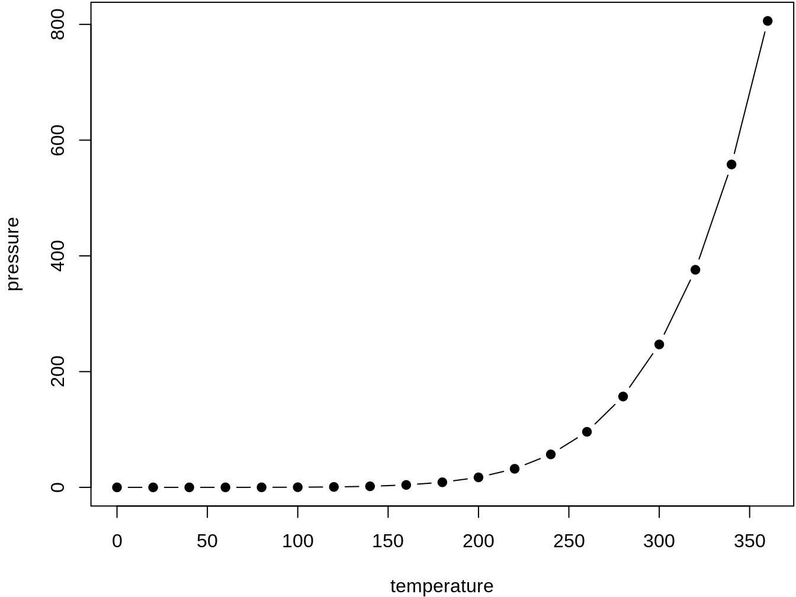

Section 3 Cross-references
Cross-references make it easier for your readers to find and link to elements in your book.
3.1 Chapters and sub-chapters
There are two steps to cross-reference any heading:
- Label the heading:
# Hello world {#nice-label}.- Leave the label off if you like the automated heading generated based on your heading title: for example,
# Hello world=# Hello world {#hello-world}. - To label an un-numbered heading, use:
# Hello world {-#nice-label}or{# Hello world .unnumbered}.
- Leave the label off if you like the automated heading generated based on your heading title: for example,
- Next, reference the labeled heading anywhere in the text using
\@ref(nice-label); for example, please see Chapter 3.- If you prefer text as the link instead of a numbered reference use: any text you want can go here.
3.2 Captioned figures and tables
Figures and tables with captions can also be cross-referenced from elsewhere in your book using \@ref(fig:chunk-label) and \@ref(tab:chunk-label), respectively.
See Figure 3.1.
par(mar = c(4, 4, .1, .1))
plot(pressure, type = 'b', pch = 19)

Figure 3.1: Here is a nice figure!
Don’t miss Table 3.1.
knitr::kable(
head(pressure, 10), caption = 'Here is a nice table!',
booktabs = TRUE
)| temperature | pressure |
|---|---|
| 0 | 0.0002 |
| 20 | 0.0012 |
| 40 | 0.0060 |
| 60 | 0.0300 |
| 80 | 0.0900 |
| 100 | 0.2700 |
| 120 | 0.7500 |
| 140 | 1.8500 |
| 160 | 4.2000 |
| 180 | 8.8000 |